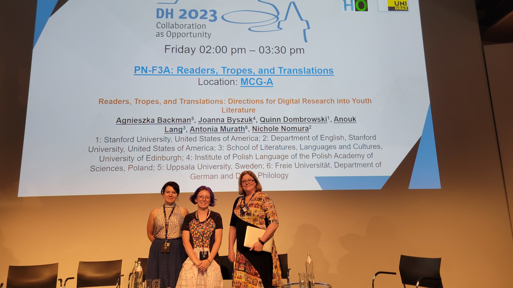
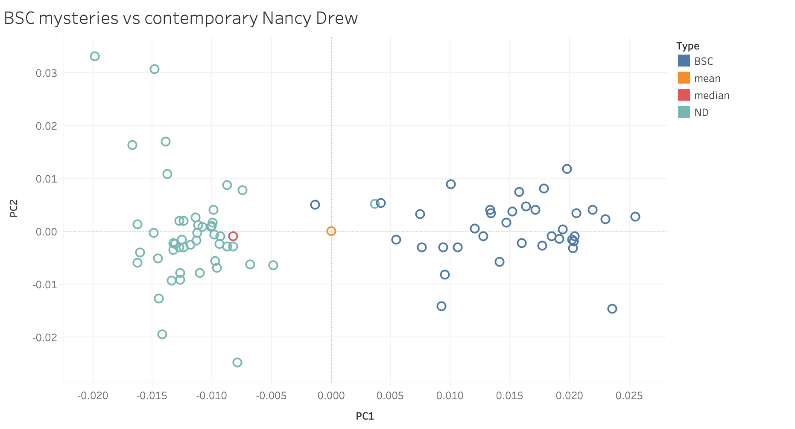
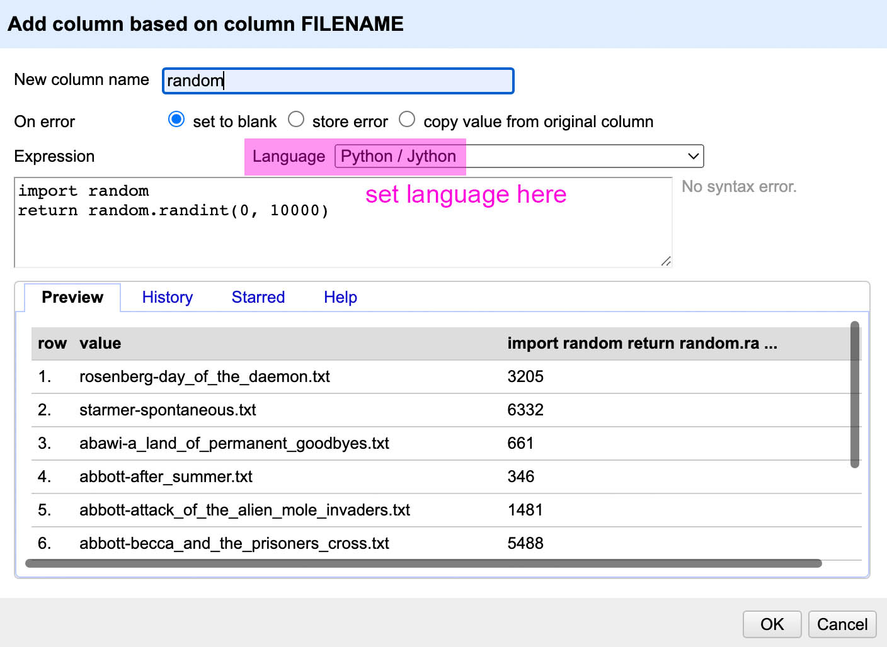

DSC #19: Shelley and the Bad Corpus#

by Quinn Dombrowski and Shelley Staples
September 12, 2023
 https://doi.org/10.25740/xb445sg6771
https://doi.org/10.25740/xb445sg6771
Corpora#
We got off easy with the Data-Sitters Club. We never had to grapple with the corpus question. We started by gathering all the books in all the Baby-Sitters Club series. That was our corpus. It was just all of them. (What’s the Data-Sitters Club? Check out Chapter 2.)
Sure, for different Data-Sitters Club books we had to focus on some subset or another. Only the main series and mysteries have the 15-chapter structure we used in DSC 8: Text-Comparison-Algorithm-Crazy Quinn. But even then, we didn’t have to make any hard choices: we just used all the texts in those series.
Most computational text analysis projects don’t have our good luck. It’s usually unrealistic to simply “get everything”. What even is “everything”? Do you have a comprehensive list of “everything” ever published that matches your parameters? If you think you do, how much do you trust that list? How was it compiled? What kinds of things might it be missing?
This is why scholars are so quick to reach for lists of things like “books that have won X award”, because it takes “everything” and turns it into something much more tractable. Even if you include runners-up for X award, you’re looking at fewer than 5 books per year, and it’s a very clearly defined set – you’re unlikely to run into weird surprises, like some book that was nominated but was somehow omitted from the public list. But the problem with building a corpus of award-winners is that – kind of by definition – these aren’t “average” books. They’re somehow distinctive, special, seen as meriting the award more than other books that fulfill the same parameters (e.g. topic, age range, etc.) You can’t say “our study says X, Y, Z about children’s literature” when you only looked at Newbery Award winners.
But what are the alternatives? Where are you going to find a reliable list of all the literature for young readers published (even just in English) in a given year– let alone spanning multiple years? Doing an actual “random sample” assumes you’re starting from some such list. It’s hard for this year’s new releases, and the further back you go in time, the harder it gets. You could pull from Goodreads all the books published in 2000, but there’s all sorts of factors that influence why books end up in Goodreads – which didn’t even start until 2006. Creating a listing on Goodreads wasn’t a publicity consideration for publishers in 2000; odds are, the books from 2000 on that site were either very popular (and republished later), or read (for whatever reason) by a serious Goodreads user who was committed to tracking their reading. Hardcore Goodreads users are not evenly distributed across all genres (or age ranges) of literature, which means there will be bigger gaps for some kinds of books than others.
There’s issues with trying to make a list of books published in 2000 using Goodreads – but that’s still “easy mode”. It’s the first quarter of this current century. What if we look back to the 1980’s, when the Baby-Sitters Club was first published? Or the 1950’s? As of this year (2023), there’s a surge of interest in things published in 1927 because they’re now in the public domain… if you can identify them, and then find a copy to digitize and share. But there are decades and decades of literature largely locked away by copyright (see DSC 7: The DSC and Mean Copyright Law), where there are several layers of problems standing between any scholar and creating some kind of representative corpus. What was even published during that time period? Even if you had a comprehensive list of things published during that time period, what is the likelihood you can find copies of a random sample of those things (and for what price)?
YRDL#
Summer 2020 found me wrangling one kid (age 6) at home, with two (4 and 2) very recently returned to a daycare with truncated hours. I was not okay. But as a thing to focus on, I built a massive collection of 30,000 texts. Between summer 2020 and winter 2022 (more specifically, February 24, 2022 when Russia invaded Ukraine – leading to the start of SUCHO less than a week later) I worked on what came to be called the Young Readers Database of Literature, or YRDL. Yes, like Dr. Seuss’s megalomaniac turtle.
My collaborator on this project, Nichole Nomura (now a graduate from the Stanford Literary Lab), is extremely thoughtful about corpora, and near-synonyms for “corpora”. That’s how we ended up with the “D” in YRDL: “database” can mean just about anything queryable. It’s a way to insist on structured questions as a necessary step in corpus-creation for specific research projects out of YRDL. YRDL is a starting point with more than a few challenges for corpus-building; at the same time, as far as we know, it’s the largest collection of Anglophone literature for young readers, and it doesn’t limit itself to prestige youth literature. We used a subset of it in DSC 10: Heather Likes PCA.
I have these kinds of conversations a lot with my students: What’s a good corpus? What’s a bad corpus? How do you know if the corpus you’ve collected is adequate – let alone good – for making the claims you want to make? If you just analyze the texts that you’re most immediately interested in using computational text analysis methods, you risk getting into the territory of DSC #11: Katia and the Sentiment Snobs where Katia got a sentiment score of “58” for Dostoevsky’s Notes from the Underground. Is that … a lot? Or not very much at all? It’s impossible to know if you’ve only looked at Notes from Underground. You have to compare it with something else. But what?
Meet Shelley#
Our PCA Data-Sitter, Heather Froehlich, pointed us towards Prof. Shelley Staples from the University of Arizona as a possible person who could help us think through these kind of questions. Shelley has blondish-brown hair but usually changes it up to pink at least once a year. She’s a corpus linguist who did not grow up reading The Baby Sitter’s Club, but did read Nancy Drew (the older versions) which is somewhat of an inspiration for The Bad Corpus. She likes helping students think about how to talk to computers and has compiled a toolkit with her research team, the Corpus and Repository of Writing, to help folks create their own corpora. In her former life, she was an early DHer at University of Virginia. She enjoys trail running, biking, and hiking with her dog, Ziggy. (Also, with a name like Shelley Staples, I’m pretty sure she could walk right off the pages of The Baby-Sitters Club.) Even though she was on sabbatical, she was generous about sitting down with me to chat about corpora.
“Where should people start with thinking about corpora, if they can’t just get everything?” I asked.
Shelley thought for a moment. “The thing about corpora,” she said, “is that there isn’t a ‘bad corpus’ in the way that jokes can be bad. Usually, ‘bad corpus’ situations are ones where corpora are being used badly. Corpus construction is like making an argument[1], and the choices you make about how representative your texts are impact the kinds of conclusions you can make. That’s true for all corpora. There are some good practices for how to get the best sample you can, and how to think about that in a principled way[2]. But first and foremost, you need to ask yourself, ‘What are my goals with this project? What claims do I want to make?’”
“It seems like it’s common for people to try to outsource their corpus construction, by relying on lists that other groups have put together – things like award winners, bestsellers, even things like Goodreads lists of teen fantasy books or things like that,” I said, thinking of projects like the Stanford Literary Lab’s Pamphlet 8, where Associate Data-Sitter Mark Algee-Hewitt and Mark McGurl looked at 20th century literature through the lens of six different lists. “But whether or not you have lists with some kind of authority to defer to, what do you think about in terms of what factors to balance when choosing what to include?”
“Let’s take bestsellers as an example,” suggested Shelley. “Realistically, you’re not going to get all of them. So you need to think about what kinds of things you want to make sure are included. What are you really interested in here? Are you trying to show some kind of change over time, or are you focusing on a particular time period? Are you looking at genre, or something related to author identity? You’re going to want to make sure you include enough of any of the things you want to look at. If you’re comparing different genres, you want to try to make sure you have enough examples of all the genres you want to include. If you only have a couple examples from one of the genres, you can still do that analysis, but you have to be more careful about your conclusions because a lot is riding on those couple books as being representative of that genre.”
“What if you’re not really sure what exactly your research question is?” I asked. I’d felt this kind of chicken-and-egg unease before with YRDL – I wanted to do “something related to” this or that topic, but I didn’t have a good enough sense of what even was there to know if any of my partially-baked ideas were going to go anywhere. I knew I’d have to actually put some thought into selecting a subset of YRDL than “everything that used X word at least Y times”, but sometimes I’d start by just using AntConc or something to find all uses of the word in the entire collection of books, to see if it occurred frequently enough (and in a set of contexts that were at least vaguely interesting) to be worth pursuing.
“Honestly, a lot of it is more qualitative,” said Shelley. “It really helps to know the corpus that you’re working with. So if you’re really at loose ends, go read some things you’re considering including. The better you understand your materials, the easier it is to make well-informed choices about your research question, and what and how to select a good corpus.”
Even though corpus-selection wasn’t a major concern for the Data-Sitters Club, Shelley’s comment was still validating – from the start, it’d been important to have Data-Sitters on the core team who were serious Baby-Sitters Club fans and could tell you off the top of their head which babysitting charge was the accident-prone one, or in which book the baby-sitters get lost at sea. It helps to have people who can sanity-check your computational results with their deep subject-area expertise, and Roopsi and Katia in particular had been great about playing that role. Katia has recently been getting back to the readthrough of the whole series she started in 2020, and I know she’s buried in a BSC book when she texts me with all sorts of new ideas for the Data-Sitters Club.
“How do you know when you’ve got enough?” I asked. This was a corpus question that had plagued me before, like in DSC 11: Katia and the Sentiment Snobs when I was flailing around, grabbing dramatic middle-grade books with female protagonists to try to toss together a very ad-hoc and honestly pretty unthoughtful comparison corpus for the Baby-Sitters Club to try to figure out how emotive these kinds of texts tend to be.
“It depends on what kind of analysis you want to run,” said Shelley. “It’s easier for me because what I look at is more grammar than individual words – so there’s always more occurrences of the things interesting to me in a text, than if you’re looking for specific words or phrases. So I’d start by doing some poking around, using word searches or a concordance tool (like AntConc). How frequent is the word or phrase you’re looking for? Corpus size does matter, but it matters more for some methods than others.”
Stuck#
I talked with Shelley in February 2023, and in retrospect, I was in a pretty deep rut. Elon Musk’s acquisition of Twitter in October 2022 had upended the DH Twitter network I had spent my career relying on. Most people stayed after some turmoil; I left, but was feeling at loose ends over on Mastodon. I was teaching my non-English DH course– my first time teaching in person since the pandemic – but it never quite felt like it clicked. A Data-Sitters Club retreat (the topic of a future Super Special) in March offered a few days’ reprieve, but I brushed off the corpus book as something I was working on. No need to talk about it, it was fine, it would be done soon.
Months passed. I mostly set aside text analysis projects during the spring; my hands were full with textile data visualization (another topic for a future book) and several students doing the DH Practicum independent study. Reuniting with colleagues I hadn’t seen in four years as part of a weeklong symposium at Hong Kong University was finally enough to pull me out of more than six months of doldrums and get my head back together in time for DH 2023 in Graz, where I had a Data-Sitters Club panel with Anouk (talking about Narnia), Joanna Byszuk (our Polish Data-Sitter, talking about stylometry), Agneszka Backmann (our Swedish Data-Sitter, talking about translation paratext), and Nichole (talking about readability metrics and YRDL). For some bizarre reason, Fall Quinn thought it’d be fun to make Summer Quinn give a talk on identifying Shakespeare YA adaptations in YRDL (tl;dr nothing I tried worked to reliably identify things that claimed to be Romeo & Juliet adaptations vs other YA romances).

I came back from the conference, straight into a cross-country road trip with the kids, working here and there but never quite in the right headspace to tackle the corpus book. Until a car breakdown left us stranded for a couple extra days in Panama City Beach, FL, where my father was supposed to meet us for a night. As one night turned into three, and the kids ran off to splash around on the beach with their grandparents, I finally had the idea I needed.
We always talk about ████████████████████ ██████████████████████████████████████ █████████████████████████████████████████ ███████████████████████████████████████████ ███████████████████████████████████████ ████████████████████████████████████████████ ███████████████████████████████████ ████████████████████████████████████████████ █████████████████████████████████████████████ ██████████████
Anouk’s Addition
Quinn wrote a self-lacerating paragraph here about why this book took so long, when the vast majority of people in our line of work have projects delayed or that end up not going forward at all. So I offered to reimagine it.
In our BSC books we take seriously the feminist imperative of never losing sight of the human lives and realities that underpin our analytical and interpretive practices: the scholarly equivalent of turning over the neat square of embroidery to reveal the messy stitching and loose tails of thread on the back, and showing that you can’t have the former without the latter. We talk, repeatedly, about how DH is people, so this is a good place to acknowledge that people are complicated, and feeling blocked and uninspired about a project is not a personal failing but rather a natural outcome of being subject to the vicissitudes of life. Especially at a time when corporate (and university) bullshit about so-called wellness is entirely disconnected from the realities of living under late capitalism, one thing we’re grateful for with the DSC is that we’re able to run the project the way we want, including prioritizing patience and compassion.
What should we look for?#
The task that I spent half a year avoiding was this: I wanted to find a topic where different corpus choices would yield different results, to illustrate the consequences of corpus choice and set up a discussion about the claims we can make.
The mystery of the dissimilar mysteries#
I started with the Nancy Drew series, and the working theory that Nancy Drew books published closer in time to the Baby-Sitters Club mysteries would be more similar to them – on account of, if nothing else, general linguistic changes between the 1930’s and 1980’s. I extracted the nouns from the Nancy Drew books in YRDL, as well as the BSC corpus, ran PCA (on nouns, like we did in DSC 10) and discovered… that the Baby-Sitters Club mysteries may be riffing on the kids-as-sleuths trope popularized by Nancy Drew (who repeatedly gets a shout-out in the BSC corpus as the trashy books Claudia hides from her parents), but all the Nancy Drew mysteries[3] look much more like one another than they do the Baby-Sitters Club mysteries, no matter how you slice it temporally.


Wardrobes of YA#
I was noodling around with AntConc looking for various words, when I found there were 271 hits for “skirt” and 355 for “pants”. Could there be something there, looking at a broader corpus? The changing frequency of references to traditionally female-coded clothing? “Skirt” had some advantages over “dress”, being less common as a verb (and I could probably weed out the verbs with some NLP parsing), and without the more risqué and puberty associations of “bra”. Skirts would also not be out of place in the fantasy genre, though might be for some sci-fi. What if we looked at girls (probably) wearing pants, by looking for sentences that mentioned “pants” and some feminine pronoun (“she … pants”, “her pants”, etc.)?
“Pants” seemed promisingly similar to “skirt” just looking at the Baby-Sitters Club examples: “Today she has on khaki pants and a button-down blouse”, “I was wearing teal-colored stirrup pants and a bulky ski sweater”, “I pulled on my favorite old cargo pants and a thermal shirt I’d tie-dyed”. It’s outfit descriptions. But some quick searches of YRDL turned up some very different things: people lie their pants off, and charm other people’s pants off, and things scare people’s pants off, to say nothing of “liar, liar, pants on fire”, pants being put on one leg at a time, and other idioms that don’t actually involve the article of clothing. (Pants also literally come off in YA as a prelude to sexual activity, which could be interesting to explore, but I feel like “pants” are doing something different in the text there than in an outfit description.) Pants are also complicated because there’s different words for specific types (jeans, shorts, sweatpants, capris) – and that’s before I remembered that YRDL has plenty of texts written in UK English, where “pants” means something else altogether.
The wardrobe of YA is something I’d like to revisit someday – who talks about clothes, how, and when? But it was a task where even framing the question precisely would be challenging, as well as identifying and weeding out the data points I didn’t want (like all those pants going up in metaphorical flames). I needed a more straightforward question, one that would make it easier to focus on the issues around corpus selection. And that’s how I found myself revisiting food, not unlike our starting point for DSC M4: Isabelle and the Missing Spaghetti-O’s.
Pizza#
There’s a lot of pizza in the world of the Baby-Sitters Club. 166 of the 224 texts in the BSC corpus have at least one reference to pizza. BSC 123: Claudia’s Big Party, has the greatest frequency of pizza references, followed by BSC 81: Kristy and Mr. Mom, and BSC 83: Stacey vs the BSC. To put the 805 references to pizza in context, there’s only 558 references to candy (at least, “candy” as such – not counting references to specific brands like M&Ms).
It’s not just the BSC: pizza appears to reign supreme in the world of teenage foodstuffs more broadly. One afternoon last summer, I got obsessed with the idea of looking for tacos and Taco Bell in YRDL[4]. I tossed together a quick corpus spanning 2000-2022, with an equally-sized random sample of books for each year, and searched for tacos, pizza, burgers, and fried chicken, along with the most iconic fast food purveyors of each of those foods in America. More books referenced pizza than any other of those foods, but since 2018, tacos have been on the rise.

One of the great things about pizza and tacos is that variations appear as separate words: you can have vegan tacos or pepperoni pizza, but they’re still easier to find with a computer than a burger that’s morphed into a cheeseburger[5].
Pizza feels concrete. It feels like something you can come up with a testable theory about. And I think there’s some value to that, especially when you’re trying to get your head around what computational text analysis methods can and can’t do. Pizza isn’t the kind of topic that most students show up interested in: what they want to work on is topics like gender, or geography, or literary prestige. And all those could be interesting to explore computationally, but there’s no magical algorithm that you can give the prompt “gender” and get back meaningful results. The way to get at the big things we care about is often through building up an argument using lots of smaller questions and theories.
Where can we go with pizza? We could look at references to pizza vs. healthier fare, as part of a question exploring whether or how middle grade and YA books model healthy food choices. Or even if we didn’t want to do it comparatively, we could look at the depiction of pizza – is pizza an everyday food? A food for special celebrations? Emblematic of a certain kind of American(ized) ideal? Something like that could feed (har har) into a larger argument about food as being emblematic of culture in YA. You could look at brand references and product placement in YA, with pizza as one component. Who’s getting delivery from PIzza Hut or Papa John’s, compared to made-up restaurants, compared to unnamed restaurants – and how does that compare to references to brand-name candy and snacks (like Claudia Kishi’s beloved Twinkies), tacos, or burgers?
To get at the issues connected with corpus selection, I’m going to put forward a hypothesis, and talk through the corpus-related decisions involved in testing it out:
Award-winning youth literature will have fewer references to pizza than series books, because pizza parties and the like are convenient formulaic elements in a series that aren’t necessary in award-winning books.
Pizza and prestige#
Finding series books#
How would we go about examining whether pizza occurs more frequently in series books than award-winners? The metadata from YRDL includes a field for “Series”. Granted, that data is still a little messy; we’ll limit it to series names that occur more than once. This would exclude any book from a series where we only have one representative book, but it’s worth it to filter out garbage values that don’t belong in that field anyway. Excluding “Series” values that are less than 4 characters long also weeds out more garbage values. We’re left with a little over 13,000 books with a roughly plausible “Series” value.
Finding award-winners#
Now, what about “award-winners”? There are lots of awards for youth literature. The Newbery Medal is perhaps the most famous long-running one in the US (since 1922); similarly, the UK has the Carnegie Medal (started in 1936). The genres and target audiences (and their ages) are all over the place, though that’s not the case for all awards for youth literature. The Printz Award (since 2000) honors the best book for teens based on literary merit. The Stonewall Honor Books in Children’s and Young Adult Literature (2010 for a specifically youth award, though the Stonewall awards date to 1971) cover a range of ages and genres, all with an LGBTQ focus. There are many other awards, some focusing on a particular genre, some organized by librarians in a particular region. It may leave you doubting how coherent “award-winners” even is as a category for analysis. Good news: it’s okay to reframe your research question if you start doing some work and realize you hadn’t entirely thought things through, and you suspect there will be problems as a result.
Let’s say we’re comparing series books and Newbery Medal winners. It would be ideal if these were by definition distinct groups – if series books were ineligible for the Newbery Medal. We do have some evidence, however, that this is usually the case in practice, including a 2017 article by Anita Silvey in School Library Journal, who interviewed over 100 educators, children’s librarians, booksellers, and media specialists on the topic of recent Newbery award winners. This piece includes a comment from a book reviewer noting that “Recent Newbery committees seem dismissive of popularity, a quality which should be an asset.” It’s not that there’s no Newbery books that also count as being part of a “series”: Shiloh has a couple of sequels, for instance. But it’s not like BSC Super Mystery #4: Baby-sitters’ Christmas Chiller was going to make anyone’s short list for the 1998 Newbery Medal, either.
If we take all of the award winners for the Newbery Medal, we’re looking at 101 titles – but 17 of them aren’t in YRDL, leaving a maximum of 84 books that we could look at. You may (and indeed, you should) ask yourself whether there’s anything the missing books have in common. Is their absence going to skew our corpus in a meaningful way? Five of the missing titles are from 1940 or before. There are a couple missing books of poetry, and a few non-fiction ones. Working with the theory that Newbery winners are less likely to have pizza, I’m not especially concerned that there might be a treasure trove of missing pizza references in 1922’s “The Story of Mankind” or 1927’s “Smoky the Cow Horse” or that “Daniel Boone” includes a surprise revelation that the frontiersman was really into pizza. 4 of the last 10 years’ winners are missing, too, which may be more of a problem if we tie pizza to recency. But my taco-oriented noodling suggested that the popularity of pizza has been stable for some time, and so we shouldn’t worry too much about a recent uptick in pizza references. Let’s work with what we have on the Newbery front as a thorough, if not perfectly complete, set.
Sampling#
Let’s now take our 84 Newbery Medal winners, and do a random sample of 84 series books to compare them against! I’ve been using OpenRefine to work with the YRDL metadata (as we discussed in DSC M4: Quinn and Lee Clean Up Ghost Cat Data-Hairballs). To get a random sample, I added a new column in OpenRefine based on the existing Filename column (hit the little down arrow next to the column name, then Edit column > Add column based on this column), and in the box that popped up, set the input mode to Python/Jython, and used this code:
import random return random.randint(0, 10000)

For each row, it assigns a random integer between 0 and 10,000 – note that the integer is chosen each time without reference to previous choices, so they probably won’t be unique. But if you then sort the columns by the random integer row, download the sorted data set (Export > Download as CSV), and select the top N rows (where N is the number of random rows you need), you’ve got a workable random set.
Where’s the pizza?#
I’ve got a script – one of my favorites – sitting on the university’s high performance computing cluster that searches for words. Let’s be real: you can get surprisingly far by just turning up occurrences of things. When I work with YRDL, it just makes sense to use the HPC cluster: I can search all 30,000 books for even long list of words in 20 minutes or less, splitting the job up into hundreds of mini-jobs, and running each on one of the thousands of cores that make up each of the 179 nodes on our cluster. (If you have no idea what I’m talking about, don’t worry: we’ll revisit HPC in a future book.)
If you’re not dealing with 30,000 books, though, you’ll probably be fine running this version of the code on any modern laptop, even if you have to let it go overnight.
#Library to navigate around directories
import os
#Sentence tokenizer, to split texts into sentences
from nltk.tokenize import sent_tokenize
#Put the path to your directory here
bookdir = '/Users/qad/Documents/dsc/dsc_corpus_clean'
#Move to the directory with the texts
os.chdir(bookdir)
#List everything in the directory
books = sorted(os.listdir(bookdir))
#Make a list of the words you want to look for
#Put spaces around them if you don't want to worry about false hits where the word is part of another word
words = ['pizza', ' burger ' ' pants ', ' skirt ']
#Open the output file
with open('/Users/qad/Documents/dsc/word-finder-results.tsv', 'w') as out:
#write headers
out.write('book\tword\tsentence\n')
#For each thing in your list
for book in books:
#Confirm that filename ends with .txt
if book.endswith('.txt'):
#Open the text file
with open(book, 'r') as f:
#Read the text in the file
booktext = f.read()
#Split the book into sentences
sentences = sent_tokenize(booktext)
for sentence in sentences:
#Lowercase the sentence (so 'word' and 'Word' don't count as different things)
sentence = sentence.lower()
#Remove newlines, single, and double quotes
sentence = sentence.replace('\n', ' ')
sentence = sentence.replace('"', '')
sentence = sentence.replace("'", '')
#For each word...
for word in words:
if word in sentence:
out.write(book+'\t'+word+'\t'+sentence+'\n')
Connecting the pizza data with the metadata#
What you get out of the pizza-finder is a spreadsheet, so it’s time for a cell cross to unite the pizza data with our book metadata. We’ve been over how to do a cell cross in DSC M3, but as a refresher, you import your new data (for us, word-finder-results.tsv) into OpenRefine. If you renamed your data when you import it into OpenRefine, make note of what you called it. Then, you open your original data in OpenRefine, and add a column based on an existing column, choosing a column they both share – in our case, filename, which is called “book” in our pizza data. This is template you use for a cell cross: cell.cross("Other-Project", “Column-to-Match-in-Other-Project”])[0].cells[Column-to-Import-from-Other-Project].value
Let’s say we kept the original name of our other project, word-finder-results.tsv and our column to match is called book. The data we want to import is the (first) sentence with a pizza reference, so that’s in a column called sentence. Putting it together, we’d write: cell.cross("word-finder-results.tsv", "book"])[0].cells[sentence].value. (Want more practice with cell cross? Check out this OpenRefine workshop by Ruth Kitchin Tillman.)
So what’s the verdict?
Out of our sampled 84 series books, we’ve got 22 books with at least one reference to pizza.
In the 84 Newbery Medal winners, we have… 2.
So we’ve confirmed our hypothesis and we can call it a job well done, right? Well…
What are we actually comparing?#
The award winner data set is different from our sampled series books in some ways that may be having an impact on our results. For starters, it skews old – Newbery Medal winners are a major source of the oldest books in YRDL, because they’re relatively easy to find, more likely to be reprinted than other books from the time period. Pizza could be found in the US in the 1920’s, but it wasn’t popularized until the 1950’s. If you call 1955 as the year when we might plausibly start seeing pizza in youth books, that leaves 35 pizza-less years not because authors aren’t writing about it, but because they’re not even eating it themselves. Six of those years are missing from the corpus, but the point still holds.
Is 1955 the year we want to start looking for pizza? It certainly isn’t any earlier than that, but the mid-20th century is rough from a corpus-building perspective. We don’t have great lists of what was published, outside of award-winners on one hand, and well-known series on the other. And even if we had the lists, it’s harder (and more expensive) to come by used copies of those books than more recent works, where you need serendipity on your side but odds are you can pick up your prize for a couple bucks if you do manage to find one.
The date data for YRDL isn’t great – in the process of working on this Newbery question, I fixed dates for a lot of prize winners, where the metadata was using a much later edition. The dates are reliably no later than dates, but in reality they may be much earlier. 1988 is the first year where we have more than 100 books (other than a weird and metadata-dubious spike in 1973); for 1955, there are only 13.

We should be suspicious about the books we have during those early years. The fact that they were available, when so many of their contemporaries were not, is… remarkable. I didn’t put a lot of effort into trying to build up a corpus of mid-20th century books specifically as part of YRDL, so odds are these were books that were reprinted later. But why? Some of them were award winners. Some were by authors who had been (or would be) famous. Some were part of famous series. And some of them have been tagged on Goodreads as “classics”, a phenomenon you can read much more about in this delightful paper by Melanie Walsh and Maria Antoniak. Long story short, there’s reason to not just accept the small number of books in YRDL for each year of the mid-20th century as something you can randomly sample from and feel good about the result. These books are probably not “normal”, even if we don’t quite know what “normal” is here.
275 books were allegedly published in 2000, which falls towards the beginning of the upward curve that peaks at over 1,900 books published in 2016 (or so claims our somewhat unreliable metadata). Certainly by the time you’re looking at a collection of over 200 youth books being published per year, you’re going to be sampling from a set that includes a larger slice of “normal” than the 13 we have for 1955. All the same, it’s worth acknowledging that many books disappear when you’re looking back at a 20-year distance, especially books from series that never became beloved, authors who had only one moderate hit, and the like. But you have to draw the line somewhere, and the turn of the millennium feels like as good an arbitrary choice as any.
Drawing the line at the year 2000, though, has consequences for our award winners: our “award winner” corpus is now only 17 books, since several of them are not in YRDL. We know the “answer” because we’ve already crunched the data: as it happens, both Newbery Medal books that reference pizza were published since 2000. Reformulating our corpus to only include books that are more likely to come from the same time period as the YRDL series books we randomly selected has changed our result pretty dramatically. When we were looking at Newbery Medal winners from 1929-2023, only 2% of the 86 books we examined included a pizza reference. If we take 2000-2023 as our data set, the outcome is 12% – even though it’s the same two books in both cases.
When we’re looking at only 17 books, a single reference can make a big difference. I’d feel better about the results if we could increase the size of the award-winner corpus – but how? The easiest approach is to include runners-up, which we do have data for. In fact, some of the famous staples (no pun intended with our guest data-sitter!) of American children’s literature grace this runner-up list, like Charlotte’s Web (which lost to Secret of the Andes, which you’ve probably never read), Old Yeller (lost to Miracles on Maple Hill), My Side of the Mountain (lost to Onion John), Ramona and Her Father (lost to Bridge to Terabithia – okay, fair enough), and Ramona Quimby, Age 8 (lost to A Visit to William Blake’s Inn – poor choice there). More recently, including honors books gets us four by Jacqueline Woodson (who’s never won), and even one by Baby-Sitters Club author Ann M. Martin! There’s 59 Newbery Honors books in YRDL (almost all of the fiction honors books since 2000), and combining those with the 17 award winners from that time period gets us to 76. It’s not quite what we were working with last time, but it’s a lot closer than just the 17. We’ll re-sample 76 series books for the occasion.
Where’s the modern pizza?#
After re-sampling 76 series books (this time excluding anything published before 2000), and re-running the process above, we have a result: 19 of these 76 21st century series books (25%) have at least one reference to pizza. As it happens, that’s almost the same percentage as our last sample of series books (26%), which is reassuring: different samples of (mostly) the same data aren’t getting us wildly different results.
How about the Newbery winners and runners-up? These numbers look very different than when we looked only at the award winners: this time, 22 out of the 76 books honored by an award or nomination have a pizza reference – 29% vs the 25% we’re seeing in series books.
So what does it all mean?#
Two of our Newbery Medal winners from the 21st century include a pizza reference; 20 runners-up do. How much do we want to read into that? Should authors of youth fiction be warned away from pizza, because it might cost them a Newbery?
No. It’s a funny idea, but it seems highly unlikely that the Newbery judges have some kind of grudge against pizza. It’s more likely that there isn’t much of a relationship between food discourse and award-worthy status. On the other hand, maybe a closer examination of the actual pizza references in award winners vs. series books might show us meaningful differences in the writing style between these two groups– nuances we might not have noticed if we just read both groups of books.
Computational text analysis gives us a set of tools that can help us more easily pay attention to things we’re curious about. It’s like activating a sixth sense as you go about investigating your research question. But it’s not the only sense you should be using, and you shouldn’t be using it at all without the aid of your own reasoning powers, guiding you towards making sensible choices that you can clearly articulate with regard to questions like “What are we comparing?”
Where would I go from here if I wanted to seriously carry on with this question of pizza and prestige? I’d keep the lists handy of which books had pizza, and which did not. I’d probably start by reading the award winners, maybe beginning first of all with the two award winners with pizza references, and then see what other award winners (if any) reminded me of those two in topic and/or style. And then I’d turn towards the runners-up, and consider how those are similar and different – amongst the group that included pizza and those that did not, as well as comparing them to the award winners. Would my process include further computational analysis? It might! There might be other words that jump out at me that I would want to explore in this same way, or I might want to try PCA on most common nouns to look at what the books are about.
But most importantly, I would read. With my eyeballs. Because as Shelley said, “It really helps to know the corpus that you’re working with.”
There’s no bad corpora, just bad matches between corpora and the questions you’re asking them. And in the end, there’s no magic algorithm that’s better than reading books with your eyeballs.
Afterword: A Funny Thing Happened on the Way to the Corpus Book#
The problem with taking nearly nine months to write a Data-Sitters Club book is that things keep happening. And in early August 2023, the Prosecraft Incident went down. A guy named Benji Smith had spent a decade compiling a corpus of mostly well-known books he’d found on the internet, crunched some numbers on them, and turned his personal database into a website where people could look at the “linguistics of literature”, framed as offering guidance for writers “struggling for guidance about how long to write their stories, how to write more vivid prose, and how much ‘passive voice’ was too much or too little.” (He also included sentiment analysis among the numbers he crunched– with the same reference to Vonnegut and “story shapes” that Matt Jockers used in his talks on Syuzhet– which we’ve already been over here at the DSC. Tl;dr it’s not a good idea.)
The Prosecraft website launched in 2017, and in another time and place, a passion project like this – without any VC backing, or monetization of the database itself (though the data was used in writing software that was a source of revenue) – would fly under the radar. But the last year has been such a turning point in the public awareness of, and social response to, AI that now things are different. There is no reasonable interpretation of copyright law where the summary stats that Prosecraft was providing would be copyright violations; there’s even arguable precedent (in Google Books) for the page-size snippets. We’ve covered that as part of the DSC, too, in our fair use book. But these days everyone is on edge about big companies sucking up all kinds of intellectual property and using it to train models that can generate new content, without paying the people who created the original content, and in a way that risks jeopardizing the future of artists being able to pay their bills.
We’ve talked about how AI works before, but clearly we’re going to need to revisit it in a future book. The 2020 world of GPT-2 we explored in The Ghost in Anouk’s Laptop is not the 2023 world of ChatGPT and GPT-4. And I suspect we’re going to need to talk about fair use again, too, in light of FCC hearings on AI, legal cases moving forward, and evolving norms, policies, and projects within universities.
But at the same time, recognizing those concerns and the broader social context doesn’t change the value and importance of projects like the Data-Sitters Club, or YRDL. Maybe the academic research context would be enough to shield the DSC from the same criticism directed at Benji Smith for Prosecraft, but given the Discourse these days, I wouldn’t assume so. Did we ask Ann M. Martin’s permission to scan her beloved 90’s girls series and write these books about using them for computational text analysis? We did not. But that’s not how literary analysis has ever worked, requiring an author’s consent for their work to be used as an object of study. Why should literary analysis with computers be treated in a fundamentally different way? YRDL was created in accordance with the existing relevant US laws; we did not violate the DMCA at any point, and there is no provision (unlike European law) constraining how you can obtain texts, as long as you’re not breaking technical protection measures. We’re not using it to train an LLM, we’re not selling it or any part of it, we’re just trying to answer research questions that no one is asking at a particular scale and that are only possible using computational methods. The academic literary establishment already puts up enough barriers to researching youth literature at all, let alone non-prestige youth literature. This is a small step towards leveling that playing field.
I would hope that difference between YRDL and Prosecraft would not be lost on people, but even if it is, I would stand firmly on paths well trodden by generations of literary critics, and argue that what we are doing is not so different as to negate the recognition that literary analysis is a legitimate task that scholars undertake to refine our knowledge of our cultural heritage, which shapes our understanding of who we are. And youth series books like the Baby-Sitters Club, American Girl, and Goosebumps are at least as important – I would argue more so – to the cultural self-awareness of our generation as abstruse highbrow literature. Analyzing this literature is our role and our right, and not something we will let AI take away from us.
In the days after the Prosecraft incident, the temperature of the Discourse cooled way down. And as author Ann Leckie posted on Bluesky:
Yeah, no, Prosecraft was not a useful tool. The analysis it presented was either worthless on its face, or designed by someone who knew fuck all about writing or grammar. If you want to be a good writer, you need to read, and to write, and to think carefully about what you read & write. Fin.
Now, that said, “reading and thinking carefully about what you read” bears a superficial similarity to what Prosecraft/Shaxpir (seriously?) is doing. But the thing is, you can’t automate that “reading and thinking carefully” bit. Partly because everyone is going to do it differently, which is GOOD.
And if someone were to do a careful study of a work and present their results, that would be fine. But “data scrape a zillion books and present a wrongheaded set of statistics that supposedly says something about good writing” is not the same thing.
I’ll be a hundred percent honest, I’m way more upset about the presentation of that frankly useless and wrongheaded data as a writing tool than I am about running my text through a hopped up wordcounter. Eh, run my text through your thing I don’t care. But leave the baby writers out of it!
As a builder of “hopped-up wordcounters”, to this I say, I am in absolute agreement. And the whole thing serves, I hope, as a useful cautionary tale for those who would go down the road of computational text analysis. Be thoughtful about your corpora, and your results. Don’t throw a bunch of algorithms at something, then claim sweeping conclusions – regardless of what the numbers say. Pizza is not the key to getting nominated and then losing the Newbery Medal. Whether you want to excel as a writer or a (computational) literary scholar, there’s no shortcut for actually reading and writing. Yourself. Not the computer.
Suggested citation#
Dombrowski, Quinn and Shelley Staples. “DSC #19: Shelley and the Bad Corpus.” The Data-Sitters Club. September 12, 2023. https://doi.org/10.25740/xb445sg6771.